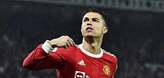

Curriculum Vitae

Cristiano Ronaldo
Resumen
El futbolista Cristiano Ronaldo, natural de Madeira (Portugal) y actual delantero del Manchester United
Datos Personales
- Nombre: Cristiano Ronaldo dos Santos Aveiro
- Lugar de nacimiento: Funchal (Madeira, Portugal)
- Fecha de nacimiento: 05 de Febrero de 1985
Formación
Cristiano empezó su carrera deportiva a los 8 años, cuando igresó a la Escuela de Fútbol La Andorinha. Como despunto desde tan temprano, los clubes C.S. MAritimo y C.D. Nacional, pronto mostraron su interes en contar con el jugador.
Premios y Reconocimientos
Cristiano Ronaldo ha recibido un sinfin de galardones y distinciones a lo largo de su carrera deportiva (premios entre los que se encuentra, ni mas ni menos, que el Balor de Oro)
- - comandante de la orden de merito de portugal(2016)
- - gran oficial de la orden de infante (2014)
- - Medalla al mérito de la orden (2006)
- - Distinción oficial Don Enrique (2004)
Fuente: Cristiano
Fuente2: Macarena Sepulveda
Fuente3: portafolio
style="
color: green;
text-shadow: 1px 1px 1px red
text-align: justify;
padding: 30px;
"
Macarena Sepulveda!